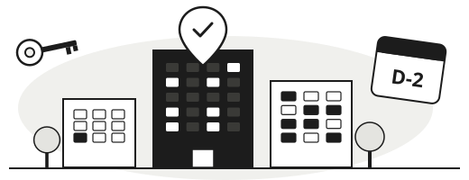

나와 주민등록상 같은 세대에 있는 가족 모두가 집을 가지고 있지 않다는 뜻입니다.
만 19~39세 청년을 위한 공공임대주택 길잡이
내가 신청할 수 있는
내가 신청할 수 있는
공공임대주택,
마감 전에 놓치지 마세요

행복주택, 청년 매입임대 공고를 한곳에서 모아 보고, 어려운 공고문은 쉬운 말로 확인하고, 접수부터 계약까지 일정을 챙겨드립니다.
- 무료
- 회원가입 없이 바로 이용
- 입력한 정보는 이 기기에만 저장
이렇게 도와드려요
지금 어떤 상황이신가요?
가장 가까운 상황을 고르면 어디서 시작하면 되는지 알려드립니다. 서비스 화면에서는 왼쪽 메뉴로 언제든 다른 기능으로 옮겨 갈 수 있습니다.
“어떤 공고가 있는지부터 알고 싶어요”
지금 접수 중이거나 곧 열리는 공고를 월간 캘린더에서 D-day와 함께 확인합니다. 관심 있는 공고는 ☆를 눌러 내 캘린더에 담아 두세요.
일정 대시보드에서 시작 →
“내가 신청할 수 있는지 모르겠어요”
“공고문을 읽어도 무슨 말인지 모르겠어요”
나이, 지역, 소득, 자산 등 9개 질문에 답하면 지금 모집 중인 공고 가운데 내 조건에 맞는 공고를 보여드립니다. 약 2분 걸립니다.
서비스 화면 왼쪽 메뉴의 ‘자가진단’에서 시작공고 링크를 붙여 넣으면 신청 자격, 일정, 보증금과 월 임대료를 정리하고 어려운 용어를 쉬운 말로 풀어드립니다.
공고 추가에서 시작 → “신청한 뒤에 일정을 놓칠까 봐 걱정돼요”공고마다 접수, 서류 제출, 당첨자 발표, 계약 단계를 기록하고 다음에 할 일과 남은 날짜를 알려드립니다.
지원 트래킹 보드에서 시작 →
쉬운 공고 설명
공고문 속 어려운 말, 이렇게 풀어드립니다
공고 상세 화면에서는 모르는 용어를 누르면 바로 뜻을 확인할 수 있습니다.
통계청이 발표하는 도시 근로자 가구의 평균 소득을 기준으로, 그 이하로 버는 경우 신청할 수 있다는 뜻입니다.
이미 지어진 단지의 빈 집에 들어갈 사람이나, 빈 집이 생길 때를 대비한 대기 순번을 뽑는 모집입니다.
자주 묻는 질문
시작하기 전에 궁금한 점
여기서 바로 공공임대주택을 신청할 수 있나요?
아니요. 신청은 LH청약플러스, 마이홈포털 등 각 공급 기관 사이트에서 합니다. 공공주거 길잡이는 신청할 공고를 찾고, 공고 내용을 이해하고, 신청 일정을 놓치지 않도록 돕습니다. 공고마다 원문 사이트로 바로 가는 링크를 함께 보여드립니다.
이용료가 있거나 회원가입이 필요한가요?
무료이며 회원가입 없이 바로 이용할 수 있습니다.
입력한 소득, 자산 정보는 어디에 저장되나요?
자가진단 답변과 스크랩한 공고, 지원 기록은 지금 사용하는 기기의 브라우저에만 저장됩니다. 다른 기기에서는 보이지 않으며, 브라우저 기록을 지우면 함께 지워집니다.
자가진단에서 맞는 공고로 나오면 신청 자격이 확정되나요?
아니요. 자가진단 결과는 참고용입니다. 최종 자격은 각 공고문의 기준과 공급 기관의 심사로 확정되므로, 신청 전에 공고문을 꼭 확인하세요.
어떤 공고를 볼 수 있나요?
행복주택, 청년 매입임대처럼 청년이 신청할 수 있는 공공임대주택 공고를 모아 보여드립니다. 원하는 공고가 없다면 공고 링크를 직접 추가할 수 있습니다.
마감이 다가오는 공고가 있습니다.
오늘 한 번 확인해 보세요.
회원가입 없이 바로 시작할 수 있습니다.